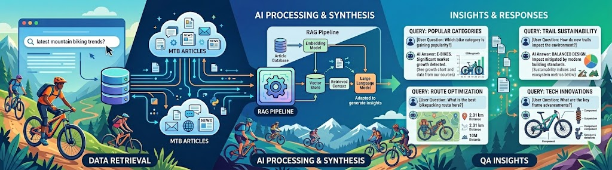
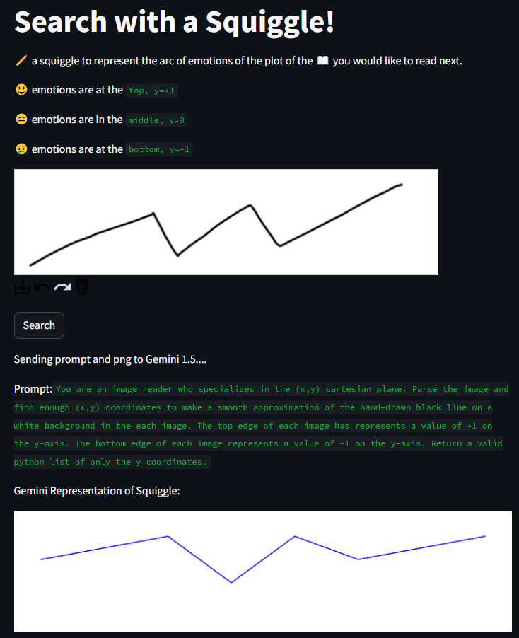
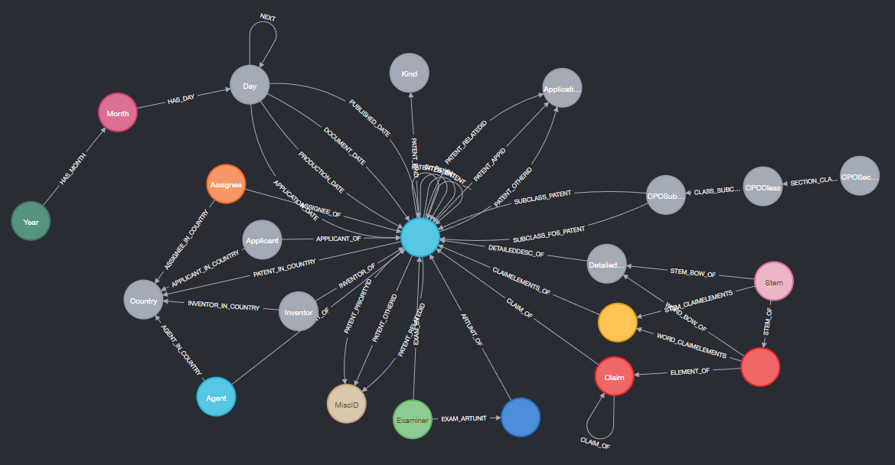
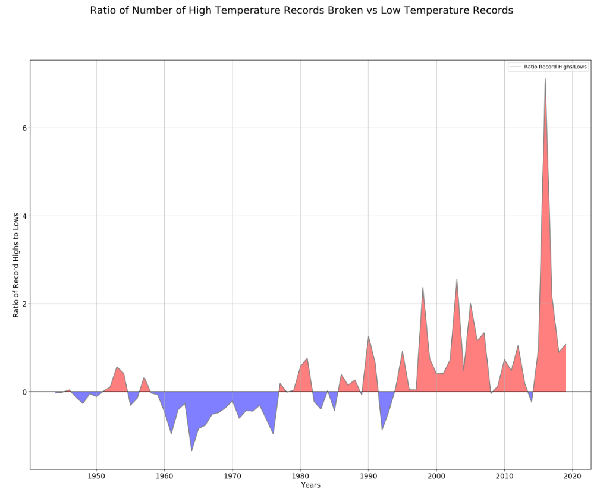

#
Personal Projects 💻
A collection of experiments, hackathons, and learning adventures! From RAG-powered bike data explorers to emotional AI journey through classic literature, these projects represent my passion for exploring cutting-edge technology while making things fun and accessible.
Whether I'm competing in hackathons, wrestling with graph databases, or solving puzzle challenges like Advent of Code, each project teaches me something new about the ever-evolving world of data science and artificial intelligence.
#
Simple RAG example

#
Gut-Emotions for MHacks

The concept was elegantly simple yet ambitious: represent an ideal reading experience as a drawn squiggle capturing the desired emotional journey (from heart-pounding thrillers to bittersweet romances), then find books whose emotional arcs best matched the drawing. While Gemini initially struggled to interpret hand-drawn input directly, we adapted by using OCR + PIL preprocessing for squiggle analysis.
The result? A unique search interface where you sketch your mood and discover literature matching that emotional fingerprint!
Source code: GitHub repository
#
Patent search engine in Neo4j

#
This Retype site
input: ./retype_src
output: C:/gitProjects/legolego.github.io
url: https://legolego.github.io/
cname: false
A simple demonstration that you can build beautiful static websites with minimal setup using Retype. This site showcases how powerful documentation can be created entirely with Markdown — no complex frameworks required. The navigation is built-in and automatically generated based on file ordering.
#
Temperature Records over time

The results were eye-opening. You can see in the visualization whether recent years have been unusually active with record-breaking temperatures or if we're back to normal variability. Climate change enthusiasts and skeptics alike can look at the raw data for themselves.
Full analysis and interactive notebook: GitHub repo
#
Advent of Code Attempts
sum = 0
for group in Lines01[:]:
group = group.split('\n')
sets = [set(x) for x in group]
#print(set.intersection(*sets))
sum += len(set.intersection(*sets))The Advent of Code has been a yearly rite since ~2018! 🎄 These challenges combine clever algorithms, regex gymnastics, and creative problem-solving in Python. Each day presents a new puzzle inspired by real-world scenarios (navigation, cryptography, simulation games), forcing you to think outside the box. The code snippets here show my approach to set theory problems, but every year I tackle hundreds of lines worth across both days.
My full collection of solutions from that active competing year — a good time capsule showing how much I've learned since then! (And yes, I still compete occasionally.)
#
PyWekaBayes
# Choose trained Weka BIFXML file
xmlfile = "D:/weka/iris.xml" # created with BayesNet, MaxNrParents=2, BIFXML file
bifreader = JavaObject(JavaObject.new_instance("weka.classifiers.bayes.net.BIFReader"))
editable = Classifier(jobject=javbridge.make_instance(
"weka/classifiers/bayes/net/EditableBayesNet",
"(Lweka/classifiers/bayes/net/BIFReader;)V",
bifreader.jwrapper.processFile(xmlfile)))
# We need to calculate the margins of all the attributes
marginCalc = JavaObject(JavaObject.new_instance("weka.classifiers.bayes.net.MarginCalculator"))
marginCalc.jwrapper.calcMargins(editable.jobject)
marginCalcNoEvidence = Serial.deepcopy(marginCalc) # could maybe get by without this, just use marginCalc()This project explores Python's Java Bridge capabilities to call Weka's Bayesian Network classifiers directly. Using Weka's BIFXML format — a compact XML representation of Bayesian networks created in the Weka GUI Chooser — we load trained models and compute attribute margins (Bayesian probabilities). This demonstrates how Python can leverage existing Java ML libraries without rewriting algorithms from scratch.
The Weka Google Groups discussion offers additional insights into building Bayesian networks with this approach.